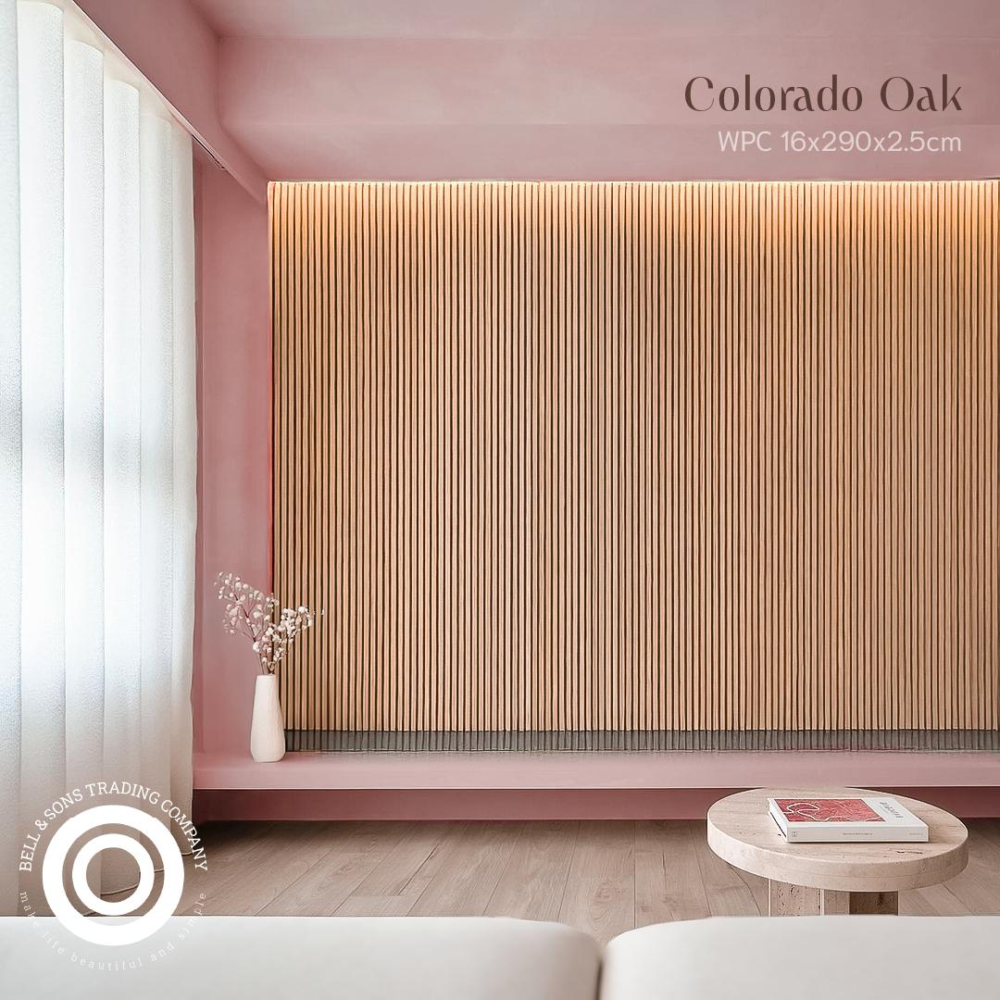

Destacado
15 Enero 2024 • 5 min lectura
5 Tendencias en Pisos WPC que Dominarán 2024
Descubre las últimas tendencias en diseño y acabados WPC que están transformando los hogares mexicanos este año. Desde colores naturales hasta texturas innovadoras.
Leer Artículo Completo